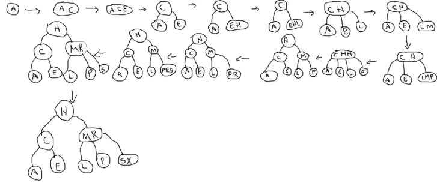

Árvore 2-3 - Implementação e Análise
1. Conceitos Gerais
Uma Árvore 2-3 é uma árvore de busca balanceada que permite nós com 1 ou 2 chaves, garantindo que todas as folhas estejam no mesmo nível.
Princípio fundamental: - Nó 2: 1 chave, 2 filhos (esquerdo e direito) - Nó 3: 2 chaves, 3 filhos (esquerdo, meio e direito) - Nós folha estão sempre no mesmo nível - Balanceamento automático através de operações de divisão durante inserções
2. Estrutura de Dados
2.1 Definições e Macros
Definições básicas para Árvore 2-3:
typedef int Key; // Tipo da chave
// Estrutura do item (chave + dados)
typedef struct {
Key k; // Chave
// data d; // Dados associados (pode ser expandido)
} Item;
#define NULL_ITEM {0} // Item nulo
#define NULL_KEY 0 // Chave nula
// Macros para manipulação de itens
#define key(A) ((A).k)
#define less(A, B) (key(A) < key(B))
#define eq(A, B) (key(A) == key(B))
2.2 Estrutura do Nó
Estrutura do nó da Árvore 2-3:
typedef struct TTNode *link;
struct TTNode {
Item item1; // Primeiro item (sempre presente)
Item item2; // Segundo item (apenas em nós 3)
link l; // Ponteiro para filho esquerdo
link m; // Ponteiro para filho do meio (apenas em nós 3)
link r; // Ponteiro para filho direito
int n; // Número de itens no nó (1 ou 2)
};
// Variáveis globais
link h; // Raiz da árvore
link z; // Nó sentinela (representa folhas vazias/nulo)
3. Implementação das Operações
3.1 Inicialização e Utilidades
Inicialização e funções auxiliares:
// Criar um novo nó 2
link NEW2(Item item, link l, link r) {
link x = malloc(sizeof(struct TTNode));
x->item1 = item;
x->item2 = NULL_ITEM;
x->l = l;
x->m = z;
x->r = r;
x->n = 1;
return x;
}
// Criar um novo nó 3
link NEW3(Item item1, Item item2, link l, link m, link r) {
link x = malloc(sizeof(struct TTNode));
x->item1 = item1;
x->item2 = item2;
x->l = l;
x->m = m;
x->r = r;
x->n = 2;
return x;
}
// Inicializar a árvore
void TT_init() {
z = NEW2(NULL_ITEM, NULL, NULL); // Nó sentinela
h = z; // Raiz inicial aponta para sentinela
}
// Verifica se a árvore está vazia
int TT_empty() {
return h == z;
}
3.2 Busca
Busca em Árvore 2-3:
// Função pública de busca
Item TT_search(Key k) {
return searchR(h, k);
}
// Função recursiva de busca
Item searchR(link r, Key k) {
if (r == z) // Não encontrado
return NULL_ITEM;
if (r->n == 1) { // Nó 2
if (eq(k, key(r->item1)))
return r->item1;
else if (less(k, key(r->item1)))
return searchR(r->l, k);
else
return searchR(r->r, k);
} else { // Nó 3
if (eq(k, key(r->item1)) || eq(k, key(r->item2)))
return eq(k, key(r->item1)) ? r->item1 : r->item2;
else if (less(k, key(r->item1)))
return searchR(r->l, k);
else if (less(k, key(r->item2)))
return searchR(r->m, k);
else
return searchR(r->r, k);
}
}
3.3 Inserção
 - Exemplo: ACEHLMPRSX
Inserção com divisão de nós:
// Função pública de inserção
void TT_insert(Item item) {
link temp = z;
h = insertR(h, item, &temp);
if (temp != z) { // Raiz foi dividida
h = NEW2(temp->item1, h, temp);
}
}
// Função recursiva de inserção
link insertR(link r, Item item, link *temp) {
if (r == z) { // Folha encontrada
*temp = z;
return NEW2(item, z, z);
}
Key k = key(item);
if (r->n == 1) { // Nó 2
if (less(k, key(r->item1))) {
link new_child = insertR(r->l, item, temp);
if (*temp == z) {
r->l = new_child;
return r;
} else { // Precisa transformar em nó 3
return NEW3((*temp)->item1, r->item1,
new_child, (*temp)->r, r->r);
}
} else {
link new_child = insertR(r->r, item, temp);
if (*temp == z) {
r->r = new_child;
return r;
} else { // Precisa transformar em nó 3
return NEW3(r->item1, (*temp)->item1,
r->l, (*temp)->l, new_child);
}
}
} else { // Nó 3 - tratamento mais complexo
// Implementação simplificada - divide o nó
if (less(k, key(r->item1))) {
// Inserção à esquerda
} else if (less(k, key(r->item2))) {
// Inserção no meio
} else {
// Inserção à direita
}
// Lógica de divisão do nó 3
}
return r;
}
4. Análise de Performance
4.1 Complexidade das Operações
| Operação | Melhor Caso | Caso Médio | Pior Caso |
|---|---|---|---|
| Busca | O(1) | O(log n) | O(log n) |
| Inserção | O(1) | O(log n) | O(log n) |
| Remoção | O(1) | O(log n) | O(log n) |
| Travessia | O(n) | O(n) | O(n) |
5. Considerações Finais
5.1 Quando Usar Árvore 2-3
- Dados dinâmicos com busca frequente: Garante O(log n) mesmo com inserções/remoções
- Aplicações críticas: Onde performance consistente é essencial
- Dados parcialmente ordenados: Excelente resistência a dados sequenciais
5.2 Alternativas e Evoluções
- Árvores Red-Black: Implementação mais eficiente com propriedades similares
- Árvores B/B+: Generalização para armazenamento em disco
- Árvores AVL: Balanceamento mais rigoroso para aplicações específicas
5.3 Aplicações Práticas
- Sistemas de arquivos: Estruturas de diretórios
- Bancos de dados: Índices balanceados
- Compiladores: Tabelas de símbolos
- Sistemas operacionais: Gerenciamento de memória